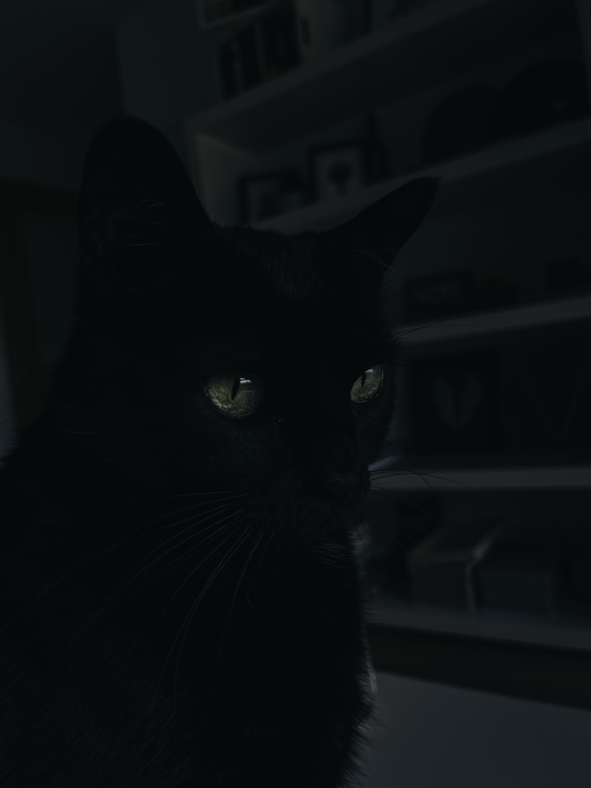

Moon, Gato común, Pelo corto
¿Qué es la fotografía de mascotas?
Fotografiar animales domésticos se ha convertido en un negocio divertido y rentable, pues son muchas las familias que quieren inmortalizar a su mascota para tener un recuerdo imborrable. Para las familias el animal se convierte en un miembro más, por lo que, además de fotografiarlas habitualmente en casa, recurren en muchas ocasiones a una sesión fotográfica profesional, que puede ser en estudio o en exterior.
Consejos y trucos para fotografiar mascotas
Vamos a ver algunos consejos generales para fotografiar mascotas:
- Conecta con la mascota. Si no es tu mascota, antes de empezar, dedica un tiempo a que te conozca y coja confianza.
- Los ojos siempre enfocados. Salvo que lo que busques sea un primerísimo primer plano de las pezuñas o el hocico, claro. La creatividad no tiene límites.
- Seguir leyendo